교통기사 (2017-05-07 기출문제)
1과목: 교통계획
1. 다음 중 교통계획의 기능 및 역할로 옳지 않은 것은?
- 장기적인 교통계획의 목표를 설정해 준다.
- 교통정책의 목표를 제시한다.
- 투자의 우선순위를 설정해 준다.
- 즉흥적이고 신속한 교통계획을 집행할 수 있다.
(정답률: 77%)

2. 교통계획에서 경제성 분석기법의 특성으로 옳은 것은?
- 비용-편익(B/C Ratio)분석법은 사업의 절대적 규모를 고려할 수 있다.
- 순현재가치(NPV)분석법은 사업의 절대적 수익성을 측정할 수 없다.
- 내부수익률(IRR)분석법은 소규모 사업이 선택되는 경향이 있다.
- 경제성 분석기법에서 할인율은 큰 영향을 미치지 않는다.
(정답률: 57%)
3. 다음 중 단기교통계획과 비교하였을 때 장기교통계획의 특징에 해당하는 것은?
- 서로 다른 대안
- 시설 지향적
- 저자본 비용
- 피드백 지향적
(정답률: 90%)
4. 사업의 경제성을 가늠하는 척도 중 하나인 순현재가치(NPV)에 대한 설명으로 옳은 것은?
- 현재가치로 환산된 장래의 연도별 편익의 합계를 현재가치로 환산된 장래의 연도별 비용의 합계로 나눈 값이다.
- 현재가치로 환산된 장래의 연도별 비용의 합계를 현재가치로 한산된 장래의 연도별 편익의 합계로 나눈 값이다.
- 현재가치로 환산된 장래의 연도별 편익의 합계에서 현재가치로 환산된 장래의 연도별 비용의 합계로 뺀 값이다.
- 현재가치로 환산된 장래의 연도별 비용의 합계와 현재가치로 환산된 장래의 연도별 편익의 합계를 더한 값이다.
(정답률: 79%)
5. 교통존(traffic analysis zone)에 관한 설명으로 틀린 것은?
- 교통존은 두 개 이상의 센트로이드를 가지고 유사한 토지이용이 포함되도록 결정되어야 한다.
- 센트로이드의 위치는 교통존 내부 링크의 접근비용이 유사성을 가질 수 있게 설정되어야 한다.
- 교통존의 경계는 사회경제지표 등 통계자료 수집이 용이하도록 행정구역과 가급적 일치되도록 한다.
- 간선도로가 가급적 교통존 경계와 일치하도록 한다.
(정답률: 73%)
6. 통행발생단계에서 사용되는 모형 중 유출, 유입 통행량과 해당지역의 특성을 나타내는 여러 지표간의 상관관계를 구하여 목표연도의 통행량을 예측하는 방법은?
- 성장률법
- 프라타법
- 원단위법
- 중력모형법
(정답률: 61%)
7. 총 300부의 설문지를 배포하여 주소불명으로 5부가 되돌아 왔으며 그 외 응답자수는 286부가 회수되었고, 여기서 분석에 사용된 응답자는 147부였다면 유효응답률은?
- 약 49.0%
- 약 51.4%
- 약 70.0%
- 약 95.3%
(정답률: 63%)
8. 다음 중 승객의 통행거리에 관계없이 동일한 요금이 부과되는 요금구조로, 장거리 승객에 비해 단거리 승객이 소요비용보다 더 많은 요금을 지불하며 도시 확산을 간접적으로 유도할 수 있는 특징을 가지고 있는 것은?
- 균일요금제
- 거리요금제
- 거리비례제
- 구간요금제
(정답률: 85%)
9. 교통조사 시 조사대상지역 밖에 출발지 또는 목적지를 가진 통행을 조사하는 방법은?
- 폐쇄선 조사
- 스크린라인 조사
- 속도 조사
- 차량번호판 조사
(정답률: 75%)
10. 주차수요 추정방법에 대한 설명으로 틀린 것은?
- P계수법의 경우 P계수에 포함되는 변수가 너무 많아 그 값들을 얻기 어렵다는 단점이 있다.
- 원단위법은 장기간 주차수요를 추정하거나 주차특성이 다양한 건물의 주차수요을 추정하는데 유용하다.
- 단순추정법은 과거 자료를 이용하여 주차의 수요와 공급에 영향을 주는 주차수요를 추정하는 방법이다.
- 누적주차대수법은 미시적인 추정방법으로서 유사한 주차특성을 나타내는 용도의 건물 또는 지구의 주차수요를 추정하는데 용이하다.
(정답률: 62%)
11. 통행수단 i의 효용함수가 아래 식으로 추정될 경우 통행수단 i의 통행시간가치로 옳은 것은?
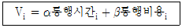
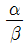
- α × β
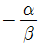
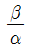
(정답률: 64%)
12. 도로구간의 속도를 허용오차 2km/h, 신뢰도는 95%의 수준으로 조사하기 위한 표본 수를 결정하고자 한다. 유사한 도로(모집단)의 속도 표준편차가 10km/h일 때, 최소한 몇 대 이상의 차량속도를 조사해야 하는가?
- 48대
- 64대
- 76대
- 97대
(정답률: 71%)
13. 다음 중 ITS의 도입 목적으로 틀린 것은?
- 도로의 교통안전 도모
- 도로 이용의 효율성 제고
- 대중교통정보의 효과적 제공
- 향후 통행 도착량의 증가를 정확히 예측
(정답률: 80%)
14. 대중교통수단의 기능으로 적합하지 않은 것은?
- 에너지 절약
- 선택기회 확대
- 주차수요 감소
- 교통혼잡 악화
(정답률: 80%)
15. 다음 도로의 운영 방법 중 도로구간을 홀수차로로 구획하고 중앙의 한 개 차로를 좌회전 교통류로 처리하여 회전교통류에 의해 직진교통류가 방해받음으로써 발생하는 링크 및 교차로의 용량저하현상을 감소시키는 효과가 있는 것은?
- 가변차로제
- 능률차로제
- 일방차로제
- 우선차로제
(정답률: 72%)
16. 대중교통의 일반적인 특성으로 틀린 것은?
- 수송 경로의 유동성이 크다.
- 환경오염이 비교적 적다.
- 불특정 다수의 수송에 용이하다.
- 수송이 대량ㆍ집약적이고 비용이 저렴한 편이다.
(정답률: 87%)
17. 로짓모형으로 정산한 통행시간(분)과 통행비용(원)에 대한 효용함수 계수가 각각 -0.017, -0.00⑤일 때 통행시간의 가치는?
- 1440원/시간
- 1740원/시간
- 1800원/시간
- 2040원/시간
(정답률: 50%)
18. 회귀분석모형의 적정성과 합리성을 검토하는데 이용하는 일반적인 척도로 틀린 것은?
- t - 검증 값
- F - 검증 값
- 탄력성(e) 값
- 결정계수(R2) 값
(정답률: 72%)
19. 다음 저서 “Traffic in Towns"에서 도시의 구성단위와 주거환경지구라는 지구교통의 개념을 발전시킨 사람은?
- H. Wright
- C. Stein
- Abercrombie
- Buchanan
(정답률: 71%)
20. 가구 당 통행발생량과 같은 종속변수를 소득이나 자동차 보유대수 등의 설명변수들에 의해 교차 분류시켜 도출해 내는 단순하고 이해하기 쉬운 통행발생 단계의 모형은?
- 로짓모형
- 카테고리분석법
- 다중회귀분석법
- 프라타법
(정답률: 76%)
2과목: 교통공학
21. 속도(V)와 밀도(k)의 관계가 V = 52.4 – 0.24k 일 때 최대교통량(Qmax)은?
- 약 2540대/h
- 약 2780대/h
- 약 2860대/h
- 약 2970대/h
(정답률: 72%)
22. 정주기식(Pre-timed control) 신호로 운영되는 신호교차로의 교토조건이 다음과 같을 때, 해당 이동류의 포화도(V/c)는 얼마인가?
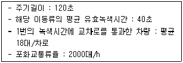
- 0.81
- 0.63
- 0.49
- 0.27
(정답률: 49%)
23. 다음 중 교통량을 조사하여 얻은 결과를 검증하기 위해 실시하는 방법은?
- 스크린라인 조사
- 폐쇄선 조사
- 차량번호판 조사
- 노측면접 조사
(정답률: 81%)
24. 다음 중 차량추종이론(car following theory)에 관한 설명으로 옳은 것은?
- 주로 도시 내의 단속류에 대한 분석이론이다.
- 차량 추종이 형성되는 형태로 FIFO, FILO, SIRO가 있다.
- 미시적 관점에서 두 차량 간에 대한 분석이지만, 이러한 개별적 움직임을 통해 교통류 전체의 형태를 추론할 수 있다.
- 교통류의 특성을 교통류율, 밀도, 속도로 설명하는 이론이다.
(정답률: 56%)
25. 일방통행제의 단점에 해당하는 것은?
- 사고증가
- 통행거리 증가
- 상충이동류 증가
- 신호시간 조절 어려움
(정답률: 79%)
26. Webster의 최적신호주기 계산공식에 포함되지 않는 것은?
- 손실시간
- 포화교통량
- 접근로 교통량
- 서비스수준
(정답률: 79%)
27. 지하주차장에서 나오는 차량이 요금을 지불하는 시스템을 분석한 결과, 대기행렬 이론의 M/M/1 시스템에 잘 맞을 때 설명 중 틀린 것은?
- M/M/1에서 첫 번째 M은 요금소에 도착하는 차량의 도착확률 분포가 무작위라는 의미이다.
- M/M/1에서 두 번째 M은 요금징수자의 서비스시간분포가 정규분포라는 의미이다.
- M/M/1으로 규정된 본 시스템은 요금징수소가 1개이다.
- 만약 차량의 대기행렬이 길어져 요금징수소를 평행하게 하나 더 만든다면 M/M/2 시스템으로 분석이 가능하다.
(정답률: 60%)
28. 다음 중 고속도로 기본구간의 서비스 교통량 산정 시 고려되는 요소가 아닌 것은?
- 차로폭
- 중차량
- 측방여유폭
- 주변 가로의 개발상태
(정답률: 86%)
29. 어느 차량이 곡선반경 250M인 평면 곡선상을 90km/h의 속도로 달릴 때, 이 평면 곡선상에서 측면으로 미끄러지지 않기 위한 편경사는? (단, 횡방향 허용 마찰계수는 0.2이다.)
- 약 0.06
- 약 0.09
- 약 0.11
- 약 0.13
(정답률: 63%)
30. 속도누적분포에서 일반적으로 교통류 내에서의 합리적인 속도의 최대값을 나타내어 현장의 도로조건에 적합한 교통운영계획을 세우는데 기준이 되는 속도는?
- 100% 속도
- 85% 속도
- 50% 속도
- 25% 속도
(정답률: 87%)
31. 다음은 녹색시간 동안에 방출되는 용량이 한 주기 동안의 도착량보다 많은 경우, 신호 교차로에서의 대기행렬 모형이다. 정지하는 차량의 비율(Ps)로 옳은 것은? (단, r : 유효적색시간(초), g : 유효녹색시간(초), q : 한 접근로의 평균 도착교통류율(pcu/초), to : 녹색신호의 시작에서부터 대기행렬이 완전히 소멸되는 시간(초))
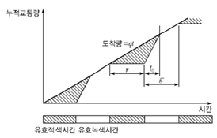
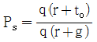
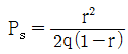
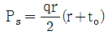
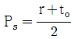
(정답률: 68%)
32. 한 운전자가 70km/h의 속도로 주행 중에 장애물을 발견하여 급제동할 때 필요한 최소 정지시거는? (단, 도로는 2%의 하향경사로, 노면의 마찰계수는 0.5이며 운전자 반응시간은 2.5초이다.)
- 88.8m
- 76.8m
- 58.9m
- 48.3m
(정답률: 67%)
33. 어느 교차로에서 첨두 1시간 동안 15분 간격으로 조사한 교통량이 725대, 492대, 630대, 495대일 때, 첨두시간계수(PHF)는?
- 0.81
- 0.72
- 0.49
- 0.31
(정답률: 70%)
34. 자유속도 60km/h, 정체(혼잡)밀도 400대/km를 갖는 교통류를 Greenshields 모형을 적용하여 분석할 때 용량은?
- 2400대/h
- 4800대/h
- 6000대/h
- 8000대/h
(정답률: 40%)
35. 다음 중 차량속도조사 및 표본 산정 시 유의사항에 해당하지 않는 것은?
- 모든 표본은 임의로 추출하되 전체 교통류를 대표할 수 있어야 한다.
- 운전자에게 조사장비가 노출되지 않도록 한다.
- 차량군에서 마지막으로 주행하는 차량을 표본으로 선정한다.
- 대형차량의 혼입률을 고려하여 대형차량의 표본을 조사한다.
(정답률: 78%)
36. 다음 중 2차로도로의 서비스수준을 판별하는 효과척도는?
- 밀도
- V/c비
- 상충횟수
- 총지체율
(정답률: 60%)
37. 어느 도로구간에서 5대의 차량에 대한 속도를 측정한 결과 다음과 같을 때 공간평균속도는?
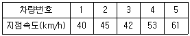
- 47.04km/h
- 46.43km/h
- 45.91km/h
- 43.26km/h
(정답률: 62%)
38. 교통류의 특성에서 평균 가속도에 관한 가속도의 표준편차를 무엇이라 하는가?
- 교통강도
- 충격편차
- 수락편차
- 가속소음
(정답률: 64%)
39. 다차로도로의 서비스수준 평가를 위한 효과척도로 옳은 것은?
- 최고제한속도
- 정지횟수
- 지체시간 비율
- 평균 통행속도
(정답률: 77%)
40. 다음 중 수요와 공급을 동시에 감소시키는 교통체계 관리기법(TSM)으로 볼 수 없는 것은?
- 주차면적의 축소
- 노상주차제한
- 자동차 통행제한 구역 설치
- 기존 차로에 버스전용차로 실시
(정답률: 63%)
3과목: 교통시설
41. 다음 평면교차로의 상충 유형을 올바르게 나타낸 것은?
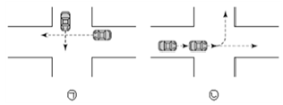
- ㉠ 교차상충, ㉡ 엇갈림상충
- ㉠ 교차상충, ㉡ 분류상충
- ㉠ 합류상충, ㉡ 엇갈림상충
- ㉠ 합류상충, ㉡ 분류상충
(정답률: 83%)
42. 보도의 설치 기준과 관련하여 ( )에 들어갈 기준으로 옳은 것은?
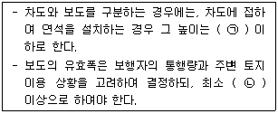
- ㉠ 20cm, ㉡ 1.5m
- ㉠ 25cm, ㉡ 1.5m
- ㉠ 20cm, ㉡ 2.0m
- ㉠ 25cm, ㉡ 2.0m
(정답률: 57%)
43. 교차로에서 상충을 효율적이고 안전하게 처리하는 방법이 아닌 것은?
- 상충의 면적을 최소화 한다.
- 상충이 발생하는 위치를 조정한다.
- 상충의 횟수를 최소화 한다.
- 운전자가 복잡한 의사결정을 하도록 한다.
(정답률: 90%)
44. 도로의 노선계획 수립 시 통제지점(control point)을 설정할 때 고려하여야 할 사항으로 옳지 않은 것은?
- 산지 및 평야지역의 구릉지
- 도시, 마을 또는 도시계획상 용도지역
- 공원, 특별보호지역, 사적지, 천연기념물 등 피해야 할 필요가 있는 곳
- 사태지대, 단층지대, 연약지반 등 지질상의 문제장소
(정답률: 55%)
45. 차로의 분리를 위한 중앙선의 표시 또는 중앙 분리대의 설치에 관한 설명으로 틀린 것은?
- 중앙분리대에 설치하는 측대의 폭은 설계 속도가 80km/h 이상인 경우 0.5m 이상으로 한다.
- 도시지역 고속도로의 경우 중앙분리대의 폭은 최소 2.0m 이상을 한다.
- 중앙분리대의 분리대 부분에 노상시설을 설치할 수 있다.
- 차로를 왕복 방향별로 분리하기 위하여 중앙선을 두 줄로 표시하는 경우 각 중앙선의 중심 사이의 간격은 0.25m 이상으로 한다.
(정답률: 52%)
46. 평면선형 설계 시에는 일반적인 방침에 따라 연속적으로 원활한 선형을 얻도록 해야 한다. 평면선형 설계의 일반적인 방침이 아닌 것은?
- 선형이 급하게 변하는 것을 피한다.
- 종단곡선과 조화는 고려하지 않아도 된다.
- 도시화 지역에서는 속도가 자연히 억제되어 작은 평면곡선 반지름을 적용하더라도 그다지 문제가 생기지 않는다.
- 주변지형과 환경에 적합하도록 한다.
(정답률: 80%)
47. 인터체인지의 형식과 적용에 관한 설명으로 틀린 것은?
- 규격이 높은 도로의 교차로는 안전에 비중을 두고 교통운용 측면을 높게 평가하여 형식을 선정한다.
- 규격이 낮은 도로의 교차로라도 평면교차에서 엇갈림이 허용되지 않는다.
- 지방부에서는 용지면적보다 교차 구조물을 적게 건설함으로써 전체적인 건설비를 줄여 경제성을 확보한다.
- 도시 내의 인터체인지는 용지면적이 적은 형식이 전체적으로 건설비가 적게 소요되므로 경제성이 높다.
(정답률: 57%)
48. 버스터미널 중 정류소(Bus Stop)의 설계제원으로 적절하지 않은 것은?
- 길이는 12m 이상 확보한다.
- 폭은 3m 이상 확보한다.
- 노면경사는 5% 이하로 한다.
- 버스의 길이를 고려한다.
(정답률: 74%)
49. 다음 중 시거에 의한 종단곡선의 최소길이를 산정할 때 오목곡선의 경우, 시거(S)가 종단곡선의 길이(L)보다 짧을 때의 산정공식으로 옳은 것은? (단, A는 종단경사의 변화량(%)이다.)
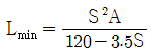
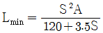
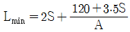
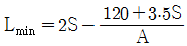
(정답률: 63%)
50. 도로의 차로수를 결정하는 요인으로 옳지 않은 것은?
- 설계속도
- 첨두시간계수
- 설계시간교통량
- 교통량의 방향별 분포
(정답률: 59%)
51. 다음 중 완화곡선의 설치목적이 아닌 것은?
- 곡선부를 주행하는 차량에 대한 원심력을 점차적으로 변화시켜 일정한 주행속도 및 주행궤적을 유지시킨다.
- 표준횡단경사 구간과 곡선부의 최대 편경사 구간을 원활하게 접속시킨다.
- 저속차량을 교통류로부터 분리시킴으로써 교통을 원활하게 유도하고 교통용량을 확보한다.
- 표준횡단폭과 곡선부의 확폭된 폭을 원활하게 접속시킨다.
(정답률: 83%)
52. 버스의 최대운행속도가 60km/h, 정류장 당 승객수가 2명, 탑승소요시간이 2초일 경우, 최적적재인원을 고려한 버스정류장의 적정 간격은 얼마인가? (단, 차량가속도 2.5m/sec2, 차량감속도는 0.5m/sec2 이다.)
- 536.1m
- 668.1m
- 733.3m
- 864.1m
(정답률: 53%)
53. 도로의 구조ㆍ시설 기준에 관한 규칙에 따른 도로의 기능별 설계속도 규정으로 옳지 않은 것은? (단, 자동차 전용도로는 제외한다.)
- 고속도로 지방지역 구릉지 - 100km/h
- 주간선도로 도시지역 - 80km/h
- 보조간선도로 지방지역 평지 - 70km/h
- 국지도로 지방지역 평지 - 50km/h
(정답률: 48%)
54. 다음 중 양방향 2차로 도로에서 앞지르기시거를 결정하기 위해 고려하여야 할 사항으로 옳지 않은 것은?
- 고속 자동차가 앞지르기를 완료한 후 마주 오는 자동차가 주행한 거리
- 고속 자동차가 반대편 차로로 진입하여 앞지르기 할 때까지 주행한 거리
- 고속 자동차가 앞지르기를 완료한 후 반대편 차로의 자동차와의 여유거리
- 고속 자동차가 앞지르기가 가능하다고 판단하고 가속하여 반대편 차로로 진입하기 직전까지 주행한 거리
(정답률: 54%)
55. 다음의 교통조건을 가진 도로의 적정 황색시간은?
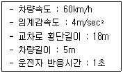
- 3.5초
- 4.0초
- 4.5초
- 5.0초
(정답률: 59%)
56. 다음 중 노면의 종류와 그에 따른 차도의 횡단경사가 잘못 연결된 것은?
- 아스팔트 포장도로 : 1.5% 이상 2.0% 이하
- 간이포장도로 : 2.0% 이상 4.0% 이하
- 비포장도로 : 2.0% 이상 5.0% 이하
- 시멘트 포장도로 : 1.5% 이상 2.0% 이하
(정답률: 71%)
57. 비상주차대의 설치 기준으로 옳지 않은 것은?
- 고속도로에서의 비상주차대의 설치간격은 750m를 표준으로 한다.
- 도시고속도로, 주간선도로로서 우측 길어깨의 폭원이 3.0m 미만일 경우에는 계획교통량이 적은 경우를 제외하고 비상주차대를 설치해야 한다.
- 비상주차대의 설치간격 결정 시에는 고장차가 그대로의 상태로 주행할 수 있을 것인가 또는 인력으로 밀어 대피시킬 것인가를 감안하여 가능한 거리를 판단해야 한다.
- 비상주차대의 폭은 3.0m로 하고 측대가 있는 경우에는 측대를 포함한 폭으로 하며, 소형자동차도로인 경우에는 2.5m로 축소할 수 있다.
(정답률: 52%)
58. 다음 중 과속방지시설의 설치장소 및 설치기준으로 옳지 않은 것은?
- 차량의 통행속도를 60km/h 이하로 제한할 필요가 있다고 인정되는 도로에 설치한다.
- 연속형 과속방지턱의 설치가 불가피할 경우 자동차의 통행속도를 30km/h로 제한할 때 그 설치간격은 35m가 되도록 한다.
- 과속방지시설은 도로의 노면 포장재료와 동일한 재료로서 노면과 일체가 되도록 설치함을 원칙으로 한다.
- 공동주택, 근린 상업시설, 학교 등 자동차의 출입이 많아 속도규제가 필요하다고 판단되는 구간에 설치한다.
(정답률: 68%)
59. 설계속도와 설계구간에 대한 내용으로 옳지 않은 것은?
- 설계속도란 도로설계의 기초가 되는 자동차의 속도를 말한다.
- 설계속도에 따라 곡선반경, 곡선의 길이, 종단경사 등이 결정된다.
- 설계구간이란 도로의 종류나 설계속도가 같으며, 같은 설계기준이 적용되는 구간을 말한다.
- 노선의 기하구조는 설계구간이 짧은 곳에 비연속적으로 적용하는 것이 바람직하다.
(정답률: 81%)
60. 계획연면적이 6000m2인 신축 근린생활시설의 첨두 시주차 발생량이 1000m2 당 6.3대일 때, 이 근린생활시설의 주차수요는? (단, 주차효율은 80.5%이다.)
- 53대
- 47대
- 38대
- 31대
(정답률: 67%)
4과목: 도시계획개론
61. 다음 중 연결녹지의 주된 설치목적에 해당하는 것은?
- 자연환경의 보전
- 녹지네트워크 형성
- 공해의 방지 및 완화
- 일상생활의 쾌적성과 안전성 확보
(정답률: 66%)
62. 다음 중 도시성장관리의 의의라고 볼 수 없는 것은?
- 급속한 도시화 추세에서 진정단계로의 국면전환
- 도시의 새로운 수요를 조절하고, 기존 도시를 효과적으로 이용
- 도시의 무분별한 외연적 확산의 억제
- 부족한 주택문제 해결을 위한 대규모 주거지 개발
(정답률: 66%)
63. 도시의 시설과 토지의 물리적 계획의 3대 요소 중 도시의 내ㆍ외부 간, 도시 내 각 지역 간 또는 도시 중요시설 상호간의 인구와 물자유통의 체계를 뜻하는 것은?
- 동선
- 밀도
- 배치
- 분산
(정답률: 77%)
64. 다음 중 버제스(Ernest W. Burgess)가 제시한 동심원 지대이론에서의 토지이용 구분에 해당하지 않는 것은?
- 점이지대
- 중공업지구
- 중심업무지구
- 저소득층주거지구
(정답률: 64%)
65. 다음 중 도시ㆍ군관리계획으로 반드시 결정할 사항과 가장 거리가 먼 것은?
- 개발제한구역 또는 시가화조정구역 지정에 관한 계획
- 도시개발사업이나 정비사업에 관한 계획
- 지구단위계획구역의 지정 또는 변경에 관한 계획과 지구단위계획
- 환경의 보전 및 관리에 관한 사항
(정답률: 56%)
66. 투입산출계수(Input-Output Cofficient) aij의 설명으로 옳은 것은?
- i산업이 한 단위의 생산을 증가시킬 때, j산업에 미치는 직간접 파급효과
- j산업이 한 단위의 생산을 증가시킬 대, i산업에 미치는 직간접 파급효과
- i산업이 한 단위의 제품을 생산하기 위하여 투입되어야 하는 j산업의 투입 재화와 용역
- j산업이 한 단위의 제품을 생산하기 위하여 투입되어야 하는 i산업의 투입 재화와 용역
(정답률: 51%)
67. 국토의 계획 및 이용에 관한 법률 시행령에서 수도권에 속하지 아니하고 광역시와 경계를 같이 하지 아니하면서 도시ㆍ군기본계획을 수립하지 아니할 수 있는 시 또는 군지역의 인구 기준은?
- 인구 5만 이하
- 인구 10만 이하
- 인구 20만 이하
- 인구 30만 이하
(정답률: 78%)
68. 다음 중 단지계획을 수립하기 위한 일반적인 원칙으로 틀린 것은?
- 단지의 물리적ㆍ사회경제적ㆍ지리적ㆍ문화적 특성을 반영하고, 수용 능력의 한계와 잠재력을 분석하여 안전하고 편리한 단지를 계획한다.
- 단지 내에서 발생하는 각종 활동을 원활하게 연결하여 안전성과 편리성을 도모한다.
- 장래에 요구되는 개발 수요와 활동을 정확하게 예측하여 개별 건축물에 대하여 정밀하게 계획하여야 한다.
- 환경오염의 발생을 방지하고, 적절한 일조ㆍ채광ㆍ통풍을 확보하여 건강하고 쾌적한 환경을 확보한다.
(정답률: 82%)
69. 도로망의 구성형태와 대표도시의 연결이 옳은 것은?
- 방사형 - 뉴욕(New York)
- 대각선 삽입형 - 파리(Paris)
- 방사환상형 - 모스크바(Moscow)
- 격자형 - 카를스루에(Karlsruhe)
(정답률: 60%)
70. Hook 신도시계획의 네 가지 기본 요소로 틀린 것은?
- 도시 인구구성의 균형
- 도시성(urbanity)의 향상
- 시가화 지역과 농촌 지역의 통합 시도
- 자동차와 보행자를 분리하는 도로망 체계
(정답률: 52%)
71. 다음 중 도시계획 상 장래 그 도시의 성장 규모와 물리적 환경의 총체적 규모를 결정하는 기본 척도가 되는 것은?
- 인구
- 소득
- 토지
- 교통량
(정답률: 79%)
72. 국토의 계획 및 이용에 관한 법령상 정의하는 기반시설로 옳지 않은 것은?
- 공간시설
- 보건위생시설
- 환경경관시설
- 공공 문화체육시설
(정답률: 65%)
73. 다음 중 공동구의 설치 목적과 거리가 먼 것은?
- 수자원의 보호
- 도시미관의 보호
- 방재능률의 향상
- 도로교통의 일원화
(정답률: 61%)
74. 국토의 계획 및 이용에 관한 법률 시행령상 도시ㆍ군계획시설의 설치ㆍ관리 기준에서 도시지역 또는 지구단위계획구역에 설치하는 기반시설에 해당하지 않는 것은?
- 주택
- 공공청사
- 사회복지시설
- 종합의료시설
(정답률: 55%)
75. 건폐율이 50%, 용적률이 500%일 때 건물의 층수는? (단, 모든 층의 바닥 면적은 동일하다.)
- 5층
- 10층
- 15층
- 20층
(정답률: 79%)
76. 녹지의 유형 중 대기오염, 소음, 진동, 악취, 그 밖에 이에 준하는 공해와 각종 사고나 자연재해, 그 밖에 이에 준하는 재해 등의 방지를 위하여 설치하는 것은?
- 경관녹지
- 방재녹지
- 완충녹지
- 연결녹지
(정답률: 52%)
77. 도시ㆍ군계획시설의 결정ㆍ구조 및 설치기준에 관한 규칙에 따른 도로의 일반적 결정기준에서 주간선도로와 주간선도로의 배치간격 기준은?
- 100m 내외
- 250m 내외
- 500m 내외
- 1000m 내외
(정답률: 77%)
78. 용도지역별 개발행위허가의 규모 기준이 틀린 것은?
- 관리지역 : 5만m2 미만
- 도시지역의 주거지역ㆍ상업지역ㆍ자연녹지지역ㆍ생산녹지지역 : 1만m2 미만
- 농림지역 : 3만m2 미만
- 자연환경보전지역 : 5천m2 미만
(정답률: 39%)
79. 문화재, 중요 시설물 및 문화적ㆍ생태적으로 보존가치가 큰 지역의 보호와 보존을 위하여 지정하는 용도지구는?
- 경관지구
- 미관지구
- 방재지구
- 보존지구
(정답률: 75%)
80. 토지이용계획의 수립을 위한 예측 변수 중 정량적 예측 변수가 아닌 것은?
- 고용자수
- 산업의 변화
- 지역 총 생산
- 인구구성 및 규모
(정답률: 74%)
5과목: 교통관계법규
81. 도로법에 따른 도로 등급의 순서로 옳은 것은?
- 특별시도 - 고속국도 - 일반국도 - 지방도
- 고속국도 - 특별시도 - 일반국도 - 지방도
- 고속국도 - 일반국도 - 지방도 - 특별시도
- 고속국도 - 일반국도 - 특별시도 - 지방도
(정답률: 69%)
82. 국가통합교통체계효율화법상 국토교통부장관은 교통기술의 연구ㆍ개발을 촉진하고 그 성과를 효율적으로 이용하도록 하기 위하여 몇 년 단위로 국가교통기술의 개발계획을 수립하여야 하는가?
- 2년
- 3년
- 5년
- 10년
(정답률: 68%)
83. 주차장법 시행규칙상 노외주차장의 출구 및 입구를 설치하여서는 아니되는 장소 기준으로 옳지 않은 것은?
- 횡단보도로부터 5m 이내에 있는 도로의 부분
- 종단 기울기가 6%를 초과하는 도로
- 너비 4m 미만의 도로(주차대수 200대 이상인 경우에는 너비 6m 미만의 도로)
- 아동전용시설의 출입구로부터 20m 이내에 있는 도로의 부분
(정답률: 50%)
84. 국가통합교통체계효율화법에 규정되어 있는 복합환승센터 개발사업에 필요한 토지의 구입 및 처분에 관한 설명 중 틀린 것은?
- 사업대상 토지면적의 3분의 2이상을 매입하여야 토지를 수용하거나 사용할 수 있다.
- 복합한승센터 안의 토지소유자가 시설을 운영하려는 경우 토지소유자에게 환지를 하여야 한다.
- 사업의 건설을 위해서 다른 사람의 토지에 출입하거나 일시적으로 사용할 수 있다.
- 시ㆍ도지사가 지정하는 복합환승센터 안의 토지 등의 수용, 사용에 대한 재결은 중앙토지수용위원회가 관장한다.
(정답률: 22%)
85. 국가교통위원회의 위원장은?
- 대통령
- 국무총리
- 국토교통부장관
- 지방자치단체장
(정답률: 72%)
86. 노외주차장의 구조ㆍ설비기준에 따른 노외주차장의 확장형 주차단위 구획은 주차단위구획 총수의 몇 퍼센트 이상 설치하여야 하는가? (단, 평행주차형식의 주차단위구획 수는 제외한다.)
- 20%
- 25%
- 30%
- 35%
(정답률: 41%)
87. 다음 중 도시교통정비 촉진법상 시장이 교통수요관리를 위하여 지방교통위원회의 심의를 거쳐야 하는사항에 해당하는 것은?
- 혼잡통행료 부과ㆍ징수에 관한 사항
- 대중교통전용지구의 지정 및 운용에 관한 사항
- 주차수요관리에 관한 사항
- 원격근무와 재택근무 지원에 관한 사항
(정답률: 45%)
88. 교통안전법상 국가교통안전시행계획에 관한 설명이 옳은 것은?
- 정부가 5년 단위로 수립하는 장기적ㆍ종합적인 교통안전 계획이다.
- 지정행정기관의 장이 매년 소관별 교통안전시행계획안을 수립한다.
- 국가교통안전시행계획안은 국무회의의 심의를 거쳐 확정한다.
- 국가교통안전시행계획의 수립 및 변경 등에 관하여 필요한 사항은 국토교통부령으로 정한다.
(정답률: 29%)
89. 국가통합교통체계효율화법에서 실시하고 있는 국가교통조사에 포함되어야 하는 사항이 아닌 것은?
- 통행목적별 장래(20년) 여객 및 화물의 기점ㆍ종점 통행량
- 교통수단별 등록 및 이용현황
- 교통수단별 및 교통시설별 운행노선, 교통량, 주행거리 등 공급ㆍ운영 실태
- 교통물류활동으로 발생하는 교통혼잡, 교통사고, 환경오염, 온실가스 배출 등 교통관련 사회적 외부비용
(정답률: 43%)
90. 다음 중 통행속도 또는 교차로 지체시간 등을 고려하여 혼잡통행료 부과지역을 지정하고, 일정 시간대에 혼잡통행료 부과지역으로 들어가는 자동차에 대하여 혼잡통행료를 부과ㆍ징수할 수 있는 자는?
- 지방경찰청장
- 경찰서장
- 시장
- 도로관리청
(정답률: 41%)
91. 도로교통법상 모든 차의 운전자가 서행하여야 하는 곳에 해당하지 않는 것은?
- 교통정리를 하고 있지 아니하는 교차로
- 도로가 구부러진 부근
- 가파른 비탈길의 오르막
- 비탈길의 고갯마루 부근
(정답률: 69%)
92. 도로교통법상 용어 정의로 틀린 것은?
- “길가장자리구역”이란 보도와 차도가 구분된 도로에서 차량운전자의 안전을 확보하기 위하여 안전표지 등으로 그 경계를 표시한 부분을 말한다.
- “안전표지”란 교통안전에 필요한 주의ㆍ규제ㆍ지시 등을 표시하는 표지판이나 도로의 바닥에 표시하는 기호ㆍ문자 또는 선 등을 말한다.
- “정차”란 운전자가 5분을 초과하지 아니하고 차를 정지시키는 것으로서 주차 외의 정지 상태를 말한다.
- “안전지대”란 도로를 횡단하는 보행자나 통행하는 차마의 안전을 위하여 안전표지나 이와 비슷한 인공구조물로 표시한 도로의 부분을 말한다.
(정답률: 64%)
93. 주차장법상 주차환경개선지구 지정ㆍ관리계획에 포함되어야 할 사항이 아닌 것은?
- 주차환경개선지구의 관리 목표 및 방법
- 주차장의 수급 실태 및 이용 특성
- 월별 주차장 감축 및 재원 관리 계획
- 노외주차장 우선 공급 등 주차환경개선지구의 지정 목적을 달성하기 위하여 필요한 조치
(정답률: 57%)
94. 국가통합교통체계효율화법 시행령에 다른 연계교통체계 영향권의 설정 범위로 옳은 것은?
- 항만구역으로부터 20km 이내의 권역
- 공항구역으로부터 30km 이내의 권역
- 물류터미널 중 복합물류터미널로부터 30km 이내의 권역
- 산업단지로부터 40km 이내의 권역
(정답률: 43%)
95. 도시교통정비 기본계획 수립 시 부문별 계획에 포함되어야 할 내용으로 틀린 것은?
- 교통시설의 개선
- 대중교통체계의 개선
- 환경친화적 교통체계의 구축
- 교통유발금의 부과 및 징수
(정답률: 58%)
96. 노면표시에 사용하는 색의 의미로 옳은 것은?
- 황색 : 반대 방향의 교통류 분리
- 백색 : 지정 방향의 교통류 분리
- 청색 : 동일한 방향의 교통류 분리 및 경계 표시
- 적색 : 주로 규제를 뜻하며, 반대 노면과의 분리
(정답률: 59%)
97. 교통안전법상의 계획별 수립 기간 기준으로 옳지 않은 것은?
- 지역교통안전시행계획 : 매년
- 국가교통안전기본계획 : 5년 단위
- 시ㆍ도교통안전기본계획 : 5년 단위
- 시ㆍ군ㆍ구교통안전기본계획 : 매년
(정답률: 53%)
98. 도로법상 도로관리청은 도로 구조의 파손 방지, 미관(美觀)의 훼손 또는 교통에 대한 위험방지를 위하여 도로의 경계선에 얼마를 초과하지 아니하는 범위에서 대통령령으로 정하는 바에 따라 접도구역으로 지정할 수 있는가? (단, 고속국도의 경우는 고려하지 않는다.)
- 10m
- 15m
- 20m
- 25m
(정답률: 63%)
99. 도로굴착에 관한 사항을 심의ㆍ조정하기 위하여 설치하는 도로관리심의회에 관한 설명으로 옳지 않은 것은?
- 고속국도와 일반국도에만 설치한다.
- 도로굴착공사의 시행에 따른 도로시설의 안전대책을 심의ㆍ조정한다.
- 주요 지하매설물의 안전대책을 심의ㆍ조정한다.
- 일반국도의 위원장은 지방국토관리청장이 된다.
(정답률: 59%)
100. 도로교통법 및 동법 시행규칙에 따른 차로의 설치에 대한 설명으로 틀린 것은?
- 차로는 횡단보도ㆍ교차로 및 철길건널목에는 설치할 수 없다.
- 차로의 순위는 도로의 오른쪽부터 1차로로 한다.
- 지방경찰청장은 차로를 설치할 수 있다.
- 보도와 차도의 구분이 없는 도로에 차로를 설치하는 때에는 그 도로의 양쪽에 길가장자리구역을 설치하여야 한다.
(정답률: 68%)
6과목: 교통안전
101. 도로횡단면과 교통사고 발생특성과의 연관성을 설명한 내용 중 가장 거리가 먼 것은?
- 차로수와 사고율은 직접적인 정(+)의 상관 관계가 있다.
- 도로변 물체와의 충돌을 방지하기 위한 가드레일 등이 장애물이 될 수 있으므로 설계시 주의해야 한다.
- 노면상태가 교통사고에 영향을 미치는 주요 요인은 미끄러짐이다.
- 교량의 폭과 포장면, 교량 접근부 등이 교통사고와 밀접한 관계가 있다.
(정답률: 68%)
102. 교통표지의 설치 시에는 운전자의 시인성 및 차량 안전을 고려해야 한③ 안전을 고려한 교통안전표지의 설치방법과 가장 거리가 먼 것은?
- 방호울타리의 안쪽에 설치
- 기존의 교량이나 육교 등 구조물상에 설치
- 차도의 오른쪽으로써 차량의 진입이 드문 곳에 설치
- 차량의 경로이탈이 예상되는 곳에 설치 시에는 break -way 지주 사용
(정답률: 46%)
103. 개별적 사고에 대한 일반적 분석절차를 순서대로 바르게 나타낸 것은?
- 사고보고 → 선정사고의 보충자료 수집 → 기술적 자료 준비 → 전문적 재구성 → 원인분석
- 사고보고 → 기술적 자료 준비 → 선정사고의 보충자료 수집 → 원인분석 → 전문적 재구성
- 기술적 자료 준비 → 선정사고의 보충자료 수집 → 사고보고 → 전문적 재구성 → 원인분석
- 기술적 자료 준비 → 사고보고 → 선정사고의 보충자료 수집 → 원인분석 → 전문적 재구성
(정답률: 57%)
104. 교통안전법 시행령상 교통행정기관은 교통안전 진단을 받을 것을 명할 때 교통안전진단을 받아야 하는 날부터 최소 며칠 전까지 교통사업자에게 이를 통보하여야 하는가? (단, 긴급하게 교통안전진단을 받을 필요가 있다고 인정되는 경우는 고려하지 않는다.)
- 50일
- 30일
- 10일
- 7일
(정답률: 73%)
1⑤. 다음 중 교차로에서 제한된 시거로 인한 보행자 사고를 방지하기 위한 대책으로 적합하지 않은 것은?
- 횡단보도 설치
- 시야 장애물 제거
- 다른 보행로로의 유도
- 미끄럼 주의 표지 설치
(정답률: 72%)
106. 다음 중 충돌도(collision diagram)에 관한 설명으로 틀린 것은?
- 요구되는 예방책을 결정하기 위한 사고의 패턴을 파악하기 위하여 사용한다.
- 사고다발지점의 물리적 현황을 나타낸다.
- 화살표와 기호로 사고에 관련된 차량이나 보행자의 경로, 사고의 유형 및 정도를 도식적으로 나타낸다.
- 보통은 축척을 무시하고 작도된다.
(정답률: 51%)
107. 중앙분리대를 설치하여 많이 감소시킬 수 있는 사고의 유형은?
- 측면충돌사고
- 추돌사고
- 정면충돌사고
- 전복사고
(정답률: 82%)
108. 교통사고를 유발시키는 운전자 요인 중 경험/실습적 요인으로 옳지 않은 것은?
- 음주장애
- 운전미숙
- 주행구간에 대한 비친숙성
- 주행구간에 대한 과도한 습관성
(정답률: 73%)
109. 주행 중이던 차량이 40m의 거리를 미끄러져 주차한 차량과 충돌하였고, 충돌 후 두 차량이 함께 20m를 미끄러져 정지하였다. 두 차량의 무게가 동일할 때 주행차량의 초기 속도는? (단, 마찰계수는 0.4 이다.)
- 100.4km/시
- 1⑤.4km/시
- 110.4km/시
- 115.4km/시
(정답률: 50%)
110. 교통사고 위험구간을 선정 시에 모든 장소에 대한 평균사고율이 아닌 유사특성을 갖는 장소의 평균사고율과 비교하며, 사고발생건수가 포항송 분포를 따른다는 가정을 기반으로 한 평가기법은?
- 사고건수법(Number of Accident Method)
- 사고율법(Accident Rate Method)
- 사고건수-사고율법(Number-Rate Method)
- 평균사고율법(Rate-Quality Control Method)
(정답률: 49%)
111. 다음 중 도로교통안전을 위협하는 직접적인 원인으로 보기 어려운 것은?
- 도로 환경적 측면 - 협소한 도로폭, 도로 선형 불량
- 차량적 측면 - 엔진불량, 타이어 마모
- 경제적 측면 - 인구증가, GDP(국내총생산) 감소
- 도로이용자 측면 - 운전 미숙, 음주 및 약물 복용
(정답률: 79%)
112. 다음 중 교통사고분석기법에서 원인분석 과정을 올바르게 나열한 것은?
- ㉡-㉠-㉢-㉣
- ㉢-㉠-㉣-㉡
- ㉠-㉡-㉢-㉣
- ㉡-㉠-㉣-㉢
(정답률: 47%)
113. 다음 중 교통사고의 특성에 대한 설명으로 틀린 것은?
- 커브지점에서는 정면충돌사고의 가능성이 높다.
- 교차로 내에서는 직각충돌사고의 가능성이 높다.
- 교차로 접근로에서는 추돌사고의 가능성이 높다.
- 주택가 생활도로에서는 전복사고의 가능성이 높다.
(정답률: 77%)
114. 교통사고 감소 및 녹색교통 활성화 차원에서 2009년부터 국내에서 본격 추진중인 회전 교차로가 일반교차로에 비하여 갖는 단점이 아닌 것은?
- 접근로 교통량이 많을 경우 대기행렬이 발생한다.
- 일반적인 신호교차로보다 넓은 부지가 필요하다.
- 보행자의 횡단을 위한 이동거리가 증가한다.
- 비신호 운영에 따라 교차로 진입 시 가속으로 안전성이 낮아질 우려가 있다.
(정답률: 66%)
115. 사고다발지역 또는 사고취약지역을 선정하는 방법에 대한 설명이 잘못된 것은?
- 사고율법 - 차량이 도로의 특정 구간을 운행한 거리나 하나의 노드 혹은 교차로로 진입하는 교통량에 대한 사고건수로 결정
- 한계사고율법 - 특정 지역 또는 구간에서의 실제 사고율을 유사한 지역 또는 구간들의 평균 사고율과 비교하여 결정
- 사고심각도법 - 인명이나 재산상의 금전적 손실에 따라 사고의 심각도를 산출하여 이를 가중치로 반영한 사고건수에 따라 결정
- 선형밀도법 - 단위 면적(예 : km2)당 사고 건수로 결정
(정답률: 46%)
116. 교통사고의 발생 원인이라고 볼 수 없는 것은?
- 운전자의 불안정한 심리상태
- 불합리한 도로의 종단선형
- 과도한 통행요금
- 악천후인 기상상황
(정답률: 80%)
117. 사고자료의 공학적 이용을 위한 사고보고서의 정리로 가장 타당한 것은?
- 사고발생 일자별 정리
- 사고발생 지점별 정리
- 사고발생 차종별 정리
- 사고발생 운전자별 정리
(정답률: 72%)
118. 어떤 차량이 노면 마찰계수가 0.7인 평탄한 도로에서 앞 차량과의 추돌을 피하기 위해 급정거하여 15.5m를 미끄러진 후 정지하였을 때 이 차량의 미끄러지기 전의 속도는?
- 42.3km/h
- 52.5km/h
- 59.4km/h
- 60.9km/h
(정답률: 61%)
119. 차량이 하루에 18600대가 통행하는 자동차 전용도로의 300m 구간에서 3년 간 교통사고가 27건 발생하였을 때 연간 통행량 1억대ㆍkm당 사고건수는?
- 약 221건
- 약 442건
- 약 663건
- 약 1326건
(정답률: 62%)
120. 교통사고 예방을 위한 3E가 아닌 것은?
- Education(교육)
- Engineering(공학)
- Enforcement(시행)
- Emergency(구호)
(정답률: 78%)